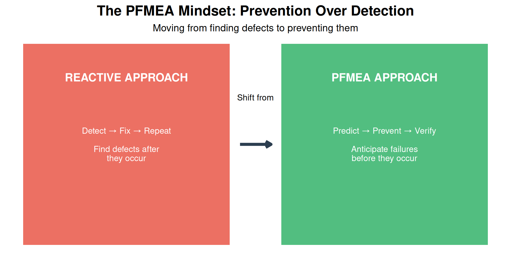
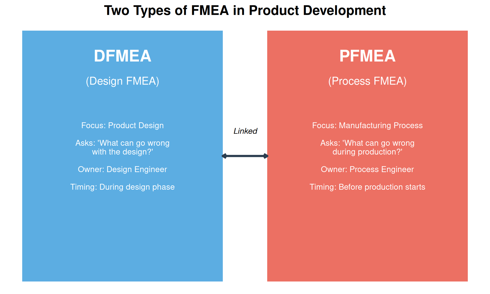
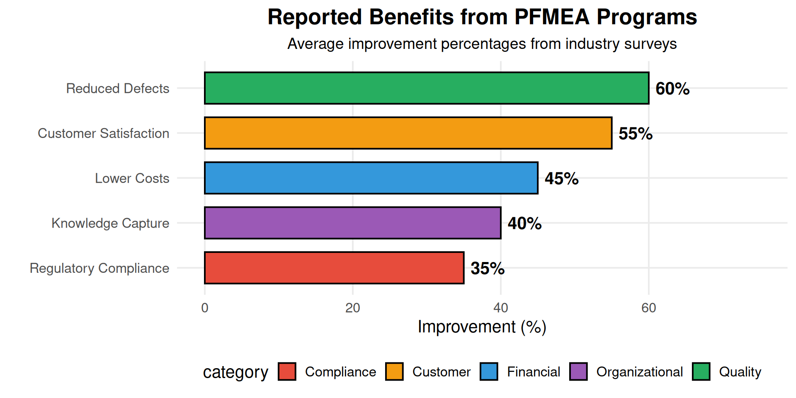
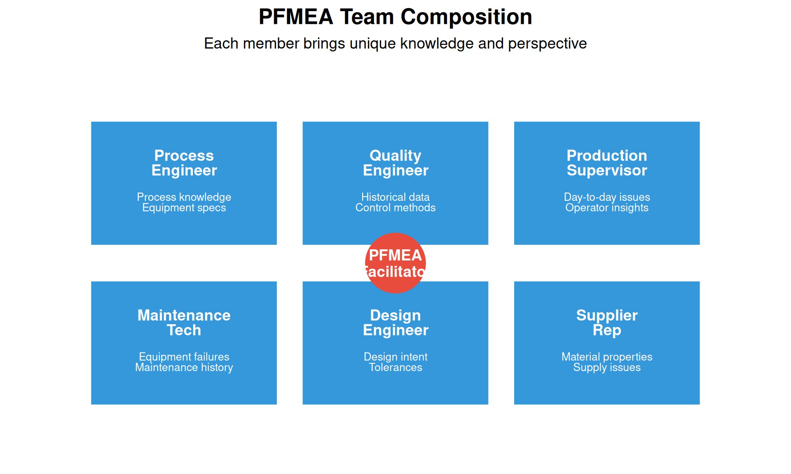
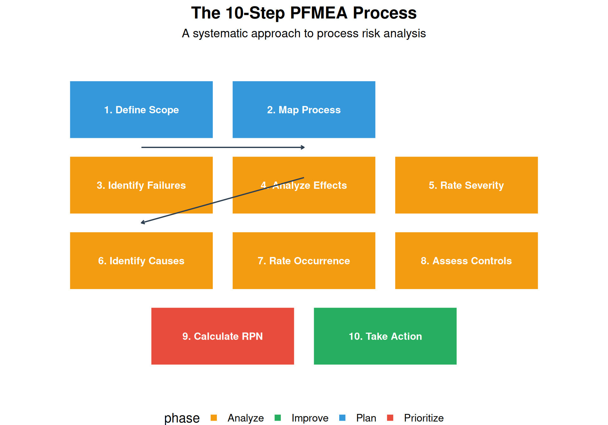
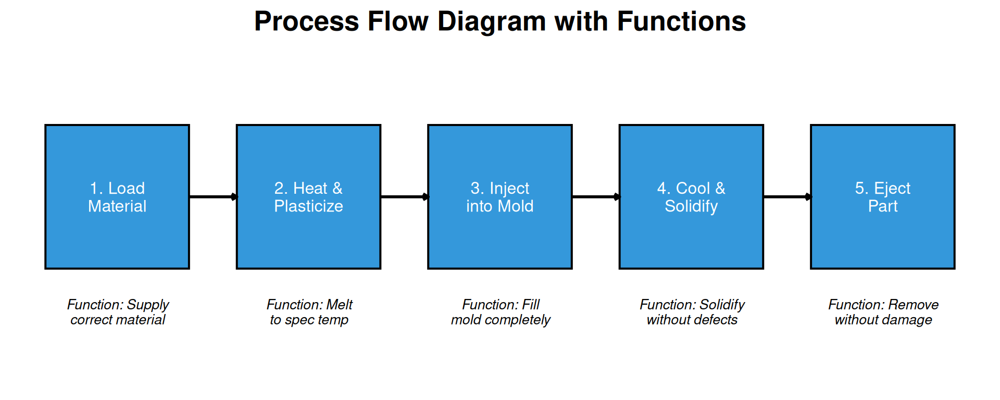
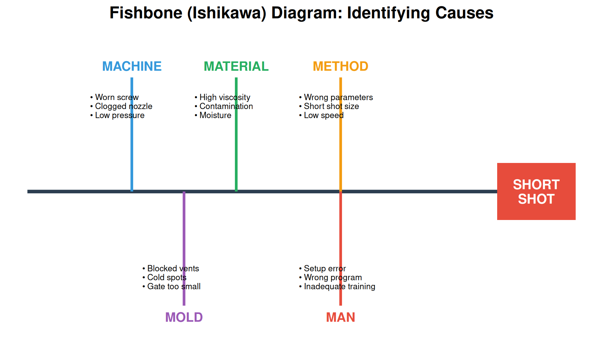
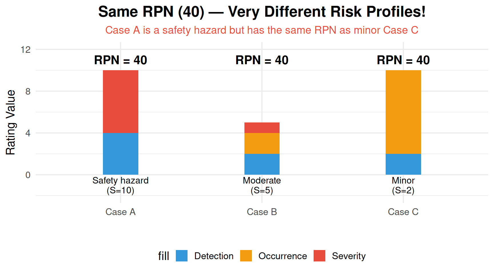
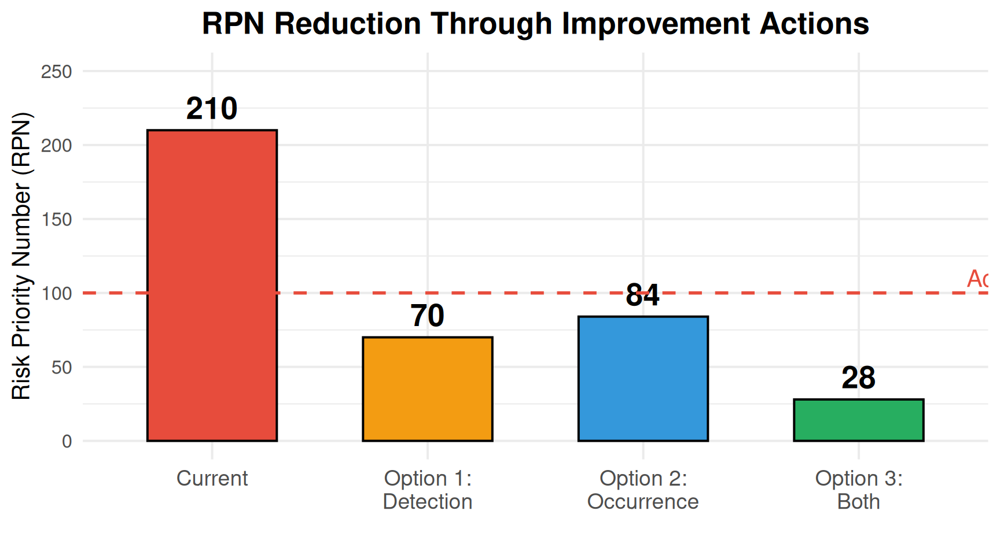
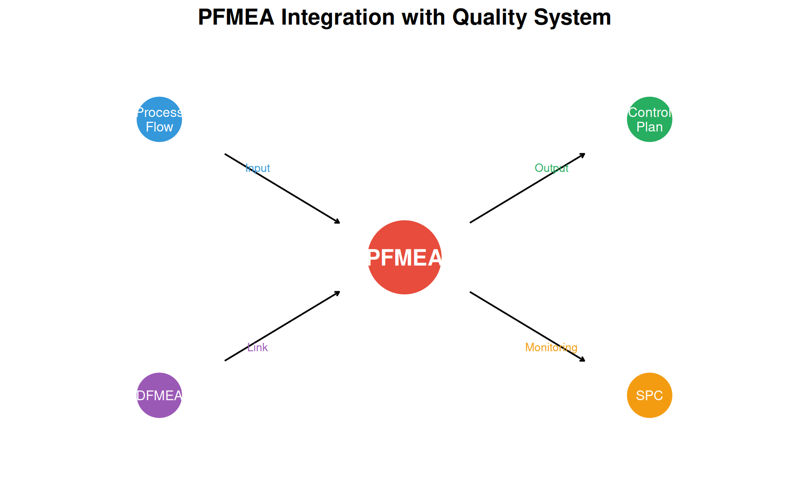

Warning: Using `size` aesthetic for lines was deprecated in ggplot2 3.4.0.
ℹ Please use `linewidth` instead.
By the end of this chapter, you will be able to:
“An ounce of prevention is worth a pound of cure.” — Benjamin Franklin
Process Failure Mode and Effects Analysis (PFMEA) is a systematic, proactive method for evaluating a manufacturing or business process to identify where and how it might fail, and to assess the relative impact of different failures. The goal is to identify and prioritize actions that will prevent defects before they occur.
Warning: Using `size` aesthetic for lines was deprecated in ggplot2 3.4.0.
ℹ Please use `linewidth` instead.
| Year | Development | Significance |
|---|---|---|
| 1949 | US Military develops FMEA (MIL-P-1629) | First formal FMEA methodology |
| 1960s | NASA adopts FMEA for Apollo program | Proven reliability in life-critical systems |
| 1970s | Automotive industry begins using FMEA | Ford, GM, Chrysler adoption drives standardization |
| 1980s | AIAG publishes first FMEA manual | Industry-wide consistency established |
| 1990s | QS-9000 requires FMEA for automotive suppliers | FMEA becomes mandatory in supply chain |
| 2000s | FMEA expands to healthcare, service industries | Methodology proves universal applicability |
| 2019 | AIAG-VDA FMEA Handbook published (current standard) | Harmonized global standard, introduces AP method |
Two main types of FMEA are used in product development:

| Aspect | DFMEA (Design) | PFMEA (Process) |
|---|---|---|
| **Primary Question** | Will the design meet requirements? | Will the process produce conforming parts? |
| **Failure Mode Example** | Shaft diameter too small | Shaft turned undersize |
| **Effect Example** | Premature bearing failure | Part fails incoming inspection |
| **Cause Example** | Inadequate stress analysis | Tool wear not monitored |
| **Control Example** | FEA simulation, prototype testing | In-process gauging, SPC |
| **Responsible Team** | Design engineering, R&D | Manufacturing, quality, production |
Ideal Timing for PFMEA:
Key Principle: The earlier PFMEA is conducted, the lower the cost of implementing improvements. Changes during design cost 10x less than changes during production, and 100x less than changes after customer delivery.

The fundamental objective of PFMEA is prevention over detection — identifying and eliminating potential failures before they occur, rather than finding defects after production.
| Objective | Description | Outcome |
|---|---|---|
| **Identify Failure Modes** | Systematically identify all ways the process can fail | Comprehensive list of potential problems |
| **Assess Risk** | Evaluate severity, likelihood, and detectability of each failure | Quantified risk scores (RPN or AP) |
| **Prioritize Actions** | Focus resources on highest-risk failure modes | Action plan focused on critical issues |
| **Document Knowledge** | Capture institutional knowledge in a structured format | Living document for continuous improvement |
| **Drive Improvement** | Implement and verify effectiveness of countermeasures | Measurable reduction in process risk |
PFMEA is most effective when conducted by a cross-functional team. No single person has all the knowledge needed to identify every potential failure.

A cross-functional team is essential because:
Common Mistake: Having one engineer complete PFMEA alone as a “paperwork exercise.” This misses critical failure modes and produces an ineffective document.
Best Practice: Minimum 4-6 team members, including at least one person with hands-on process experience.
Understanding PFMEA terminology is essential for effective analysis:
| Term | Definition | Example |
|---|---|---|
| **Process Function** | What the process step is supposed to do | 'Drill hole to 10mm ± 0.1mm' |
| **Failure Mode** | How the process can fail to perform its function | Hole diameter undersize, oversize, off-location |
| **Failure Effect** | The consequence of the failure on the customer or next operation | Part rejected at assembly, field failure |
| **Severity (S)** | Rating (1-10) of how serious the failure effect is | 10 = safety hazard, 1 = no effect |
| **Failure Cause** | Why the failure mode might occur | Drill bit wear, incorrect feed rate |
| **Occurrence (O)** | Rating (1-10) of how likely the cause is to happen | 10 = very high, 1 = remote |
| **Current Controls** | What currently prevents the cause or detects the failure | In-process gauge, SPC chart |
| **Detection (D)** | Rating (1-10) of how likely current controls will detect the failure | 10 = no detection, 1 = certain detection |
| **RPN** | Risk Priority Number = S × O × D | Range: 1 to 1000 |
| **Action Priority (AP)** | Alternative prioritization method (AIAG-VDA) | High, Medium, Low |
The PFMEA is documented in a structured form. Here is a simplified template:
| Process Step | Function | Failure Mode | Effect | S | Cause | O | Current Controls | D | RPN | Action |
|---|---|---|---|---|---|---|---|---|---|---|
| Example: | Drill hole | Hole undersize | Assembly interference | 7 | Drill wear | 5 | Visual inspection | 6 | 210 | Add in-process gauge |
PFMEA follows a systematic 10-step methodology. Each step builds on the previous one.

Before starting the analysis, clearly define what is included and excluded.
| Element | Description | Example: Injection Molding |
|---|---|---|
| **Process Name** | Clear name identifying the process | Plastic Part Injection Molding |
| **Start Boundary** | Where does our analysis begin? | Raw material loading into hopper |
| **End Boundary** | Where does our analysis end? | Part removed from mold, ready for packaging |
| **Included Operations** | All operations within scope | Material prep, injection, cooling, ejection, inspection |
| **Excluded Operations** | Operations analyzed separately or by others | Mold design (covered by DFMEA), packaging |
| **Key Assumptions** | Conditions assumed to be true | Material meets incoming spec, mold is validated |
Create a detailed process flow diagram and identify the function of each step.

For each process function, ask: “How can this step fail to perform its intended function?”
| Process Function | Potential Failure Mode | Category |
|---|---|---|
| Load correct material | Wrong material loaded | Wrong item |
| Load correct material | Material contaminated | Degraded item |
| Load correct material | Insufficient material | Missing item |
| Melt to specification temperature | Temperature too low | Below specification |
| Melt to specification temperature | Temperature too high | Above specification |
| Fill mold completely | Short shot (incomplete fill) | Incomplete operation |
| Fill mold completely | Flash (overfill) | Excessive operation |
| Fill mold completely | Air entrapment | Unintended result |
Common failure mode categories: - No operation (step doesn’t happen) - Partial operation (incomplete) - Degraded operation (below standard) - Excessive operation (too much) - Wrong operation (incorrect action) - Intermittent operation (inconsistent)
Process Step: Heat treat steel parts at 850°C for 2 hours
Function: Achieve required hardness (58-62 HRC)
Identify at least 5 potential failure modes:
Answers: 1. Temperature too low → Parts soft (below hardness spec) 2. Temperature too high → Parts brittle/cracked 3. Time too short → Incomplete hardening 4. Time too long → Over-hardening, distortion 5. Uneven heating → Inconsistent hardness across part 6. Wrong atmosphere → Surface decarburization 7. Quench delay too long → Soft spots
For each failure mode, determine: “What is the consequence if this failure occurs?”
Consider effects at multiple levels: 1. Local effect: Impact on immediate operation 2. Next operation effect: Impact on downstream process 3. End customer effect: Impact on final user
| Failure Mode | Effect Level | Effect Description |
|---|---|---|
| Short shot | Local | Part is incomplete/missing features |
| Short shot | Next Operation | Part rejected at inspection, line stoppage |
| Short shot | End Customer | If shipped: product malfunction, safety hazard |
| Flash | Local | Excess material on part edges |
| Flash | Next Operation | Secondary trimming required, increased cycle time |
| Flash | End Customer | If shipped: poor fit, appearance defect |
Severity (S) rates the seriousness of the effect on a scale of 1-10.
| Rating | Effect | Criteria | Example |
|---|---|---|---|
| 10 | Hazardous - without warning | Safety hazard; noncompliance with regulations; no warning | Brake failure without warning |
| 9 | Hazardous - with warning | Safety hazard; noncompliance with regulations; with warning | Airbag warning light before failure |
| 8 | Very High | Product inoperable; loss of primary function | Engine won't start |
| 7 | High | Product operable but at reduced performance | Engine runs rough, reduced power |
| 6 | Moderate | Product operable; comfort/convenience affected; noticeable | Wind noise, A/C takes longer to cool |
| 5 | Low | Product operable; reduced comfort; noticed by average customer | Door handle feels loose |
| 4 | Very Low | Product operable; slightly reduced comfort; noticed by discriminating customer | Slight paint imperfection |
| 3 | Minor | Fit/finish nonconforming; noticed by discriminating customer | Panel gap slightly uneven |
| 2 | Very Minor | Fit/finish nonconforming; noticed only by trained observer | Under-hood label crooked |
| 1 | None | No discernible effect | No effect observable |
Important: Severity is determined by the effect, not the failure mode. Severity can only be reduced by changing the design — process changes typically cannot reduce severity.
For each failure mode, identify all possible causes: “Why might this failure occur?”

Occurrence (O) rates the likelihood that the cause will occur on a scale of 1-10.
| Rating | Likelihood | Criteria | Approximate Rate | Cpk Equivalent |
|---|---|---|---|---|
| 10 | Very High | Failure is almost inevitable | ≥100 per 1000 (≥10%) | < 0.33 |
| 9 | Very High | Failures occur very frequently | 50 per 1000 (5%) | ≥ 0.33 |
| 8 | High | Failures occur frequently | 20 per 1000 (2%) | ≥ 0.51 |
| 7 | High | Failures occur on regular basis | 10 per 1000 (1%) | ≥ 0.67 |
| 6 | Moderate | Occasional failures | 5 per 1000 (0.5%) | ≥ 0.83 |
| 5 | Moderate | Occasional failures expected | 2 per 1000 (0.2%) | ≥ 1.00 |
| 4 | Low | Relatively few failures | 1 per 1000 (0.1%) | ≥ 1.17 |
| 3 | Low | Few failures | 0.5 per 1000 (500 ppm) | ≥ 1.33 |
| 2 | Remote | Failure unlikely | 0.1 per 1000 (100 ppm) | ≥ 1.50 |
| 1 | Remote | Failure nearly impossible | ≤0.01 per 1000 (≤10 ppm) | ≥ 1.67 |
Identify current controls and rate their ability to detect the failure or cause.
Types of Process Controls:
| Control Type | Purpose | Examples | Impact on PFMEA |
|---|---|---|---|
| **Prevention Controls** | Prevent the cause from occurring | Error-proofing (poka-yoke), interlocks, maintenance programs | Reduces Occurrence rating |
| **Detection Controls** | Detect the failure mode or cause after it occurs | Inspection, testing, gauging, SPC monitoring | Reduces Detection rating |
Detection Rating Scale:
| Rating | Detection | Criteria | Example Control |
|---|---|---|---|
| 10 | Absolute Uncertainty | No current control; cannot detect or is not analyzed | No inspection planned |
| 9 | Very Remote | Control will probably not detect | Indirect measurement only |
| 8 | Remote | Control has poor chance of detection | Visual inspection of hidden feature |
| 7 | Very Low | Control has low chance of detection | Manual 100% visual inspection |
| 6 | Low | Control may detect | Variable gauging after operation |
| 5 | Moderate | Control has moderate chance of detection | SPC charting |
| 4 | Moderately High | Control has moderately high chance of detection | In-station gauging with feedback |
| 3 | High | Control has high chance of detection | Automated 100% gauging |
| 2 | Very High | Control almost certain to detect | Multiple independent automated checks |
| 1 | Almost Certain | Control will detect; error-proofed | Error-proofing prevents defect creation |
Important: Detection ratings are often harder to reduce than occurrence ratings. Adding inspection doesn’t prevent defects — it only catches them. Prevention is always better than detection.
Detection ratings are harder to reduce because:
Better approach: Focus on reducing occurrence through: - Error-proofing (poka-yoke) - Process capability improvement - Preventive maintenance - Better training
The Risk Priority Number (RPN) combines all three ratings:
\[\text{RPN} = \text{Severity (S)} \times \text{Occurrence (O)} \times \text{Detection (D)}\]
Live cell — try different Severity, Occurrence, and Detection ratings.
RPN Action Thresholds (Traditional):
| RPN Range | Risk Level | Action Required |
|---|---|---|
| 1-50 | Low | Monitor; no immediate action |
| 51-100 | Moderate | Consider action if resources available |
| 101-200 | Significant | Action required within planning cycle |
| 201-500 | High | Immediate action required |
| 501-1000 | Critical | Stop production; immediate corrective action |
Calculate the RPN for each failure mode and rank them:
| Failure Mode | Severity | Occurrence | Detection | RPN |
|---|---|---|---|---|
| A: Dimension out of spec | 6 | 4 | 5 | ? |
| B: Surface scratch | 3 | 7 | 2 | ? |
| C: Missing component | 8 | 2 | 8 | ? |
| D: Wrong material | 9 | 3 | 6 | ? |
Answers: - A: 6 × 4 × 5 = 120 - B: 3 × 7 × 2 = 42 - C: 8 × 2 × 8 = 128 - D: 9 × 3 × 6 = 162
Priority Order: D (162) > C (128) > A (120) > B (42)
Question: Should we always address the highest RPN first? See limitations discussion below.
RPN has known limitations that must be understood:

Key RPN Limitations:
The 2019 AIAG-VDA FMEA Handbook introduced the Action Priority (AP) method as an alternative to RPN.
| Priority | Criteria | Action Required |
|---|---|---|
| **HIGH** | Severity = 9 or 10 (any O, any D) | Must take action to improve prevention/detection |
| **HIGH** | Severity = 8 AND Occurrence ≥ 4 | Must take action |
| **MEDIUM** | Severity = 7 AND Occurrence ≥ 5 | Should take action |
| **MEDIUM** | Severity = 5-6 AND Occurrence ≥ 6 AND Detection ≥ 5 | Should take action |
| **LOW** | All other combinations | May take action; document rationale if no action |
For high-priority items, develop specific recommended actions.
| Failure Mode | Current RPN | Recommended Action | Responsible | Target Date | Target S | Target O | Target D | Target RPN |
|---|---|---|---|---|---|---|---|---|
| Short shot | 210 | Install shot size monitoring with automatic reject | Process Engineer | 2024-03-15 | 7 | 3 | 2 | 42 |
| Short shot | 210 | Implement preventive maintenance for nozzle cleaning | Maintenance | 2024-02-28 | 7 | 2 | 6 | 84 |
| Short shot | 210 | Add mold temperature monitoring with alarm | Quality Engineer | 2024-03-01 | 7 | 5 | 4 | 140 |
Let’s work through a complete PFMEA for an injection molding process step by step.
| Step | Function | Failure Mode | Effect | S | Cause | O | Control | D | RPN |
|---|---|---|---|---|---|---|---|---|---|
| 3. Inject | Fill mold completely | Short shot | Part scrapped, line stoppage | 7 | Insufficient shot size | 5 | Visual inspection | 6 | 210 |
| 3. Inject | Fill mold completely | Flash | Secondary trim required | 4 | Excessive pressure | 6 | Visual inspection | 3 | 72 |
| 3. Inject | Fill mold completely | Air entrapment | Weak area, visual defect | 6 | Blocked vent | 4 | First article inspection | 5 | 120 |
| 4. Cool | Solidify uniformly | Warpage | Dimensional rejection | 7 | Uneven cooling | 4 | CMM sample check | 4 | 112 |
| 4. Cool | Solidify uniformly | Sink marks | Visual defect | 5 | Thick section, short pack | 5 | Visual inspection | 4 | 100 |
| 5. Eject | Remove without damage | Stuck in mold | Part damage, mold damage | 8 | Insufficient draft angle | 3 | Ejector pressure monitor | 5 | 120 |
Live cell — try different S/O/D ratings for each improvement option.

| Failure Mode | Effect | S | Cause | O | Current Control | D | RPN |
|---|---|---|---|---|---|---|---|
| Incomplete fusion | Weak joint, potential crack | 9 | Low heat input, contamination | 4 | Visual + X-ray sample | 4 | 144 |
| Porosity | Leak path, strength reduction | 8 | Shielding gas issue, moisture | 5 | Visual inspection | 5 | 200 |
| Undercut | Stress concentration, fatigue failure | 7 | Excessive current, wrong angle | 4 | Visual inspection | 4 | 112 |
| Spatter | Appearance, cleanup required | 3 | Wrong parameters, contaminated wire | 6 | Visual inspection | 2 | 36 |
| Distortion | Dimensional non-conformance | 6 | Excessive heat, improper sequence | 4 | CMM check | 5 | 120 |
| Failure Mode | Effect | S | Cause | O | Current Control | D | RPN |
|---|---|---|---|---|---|---|---|
| Under-hardened | Premature wear, field failure | 8 | Low temp, short time | 4 | Hardness test sample | 4 | 128 |
| Over-hardened/Brittle | Part cracks under load | 9 | High temp, long time | 3 | Hardness test sample | 4 | 108 |
| Surface decarburization | Soft surface, wear | 7 | Wrong atmosphere | 4 | Surface hardness check | 5 | 140 |
| Distortion/Warpage | Dimensional rejection | 6 | Uneven heating, rapid quench | 5 | CMM sample | 4 | 120 |
| Quench cracking | Scrap, safety hazard | 10 | Thermal shock, design | 2 | Visual inspection | 6 | 120 |
| Failure Mode | Effect | S | Cause | O | Current Control | D | RPN |
|---|---|---|---|---|---|---|---|
| Under-processing | Pathogen survival, food safety | 10 | Equipment malfunction, calibration | 2 | Continuous temp monitoring + chart recorder | 2 | 40 |
| Over-processing | Nutrient loss, off-flavor | 5 | Control system error | 3 | Temperature alarm | 3 | 45 |
| Temperature deviation | Inconsistent kill, shelf life | 8 | Sensor drift, flow variation | 3 | Calibration schedule | 3 | 72 |
| Time deviation | Process variation | 6 | Timer malfunction | 3 | Time verification | 3 | 54 |
| Cross-contamination | Product recall, illness | 10 | Gasket leak, CIP failure | 2 | CIP verification + testing | 4 | 80 |
Create a simple PFMEA for a coffee brewing process in a commercial setting.
Process Steps: 1. Fill water reservoir 2. Load coffee grounds 3. Brew coffee 4. Dispense into cup
Identify at least 4 failure modes with S, O, D ratings and RPN.
Example Answer:
| Step | Failure Mode | Effect | S | Cause | O | Control | D | RPN |
|---|---|---|---|---|---|---|---|---|
| 1. Fill water | Wrong water level | Weak/strong coffee | 4 | No level indicator | 5 | Visual check | 5 | 100 |
| 2. Load grounds | Wrong amount | Weak/strong coffee | 4 | No measuring | 6 | Visual check | 6 | 144 |
| 3. Brew | Temperature too low | Under-extracted | 6 | Heating element worn | 3 | Temp display | 4 | 72 |
| 4. Dispense | Overflow | Burn hazard, mess | 8 | Cup sensor failure | 2 | Cup sensor | 4 | 64 |
Priority: Wrong amount (144) > Water level (100) > Temperature (72) > Overflow (64)
PFMEA doesn’t exist in isolation — it connects to other quality tools and systems.

The PFMEA directly feeds the Control Plan — a document that specifies what controls are needed at each process step.
| From PFMEA | To Control Plan |
|---|---|
| Process Step | Operation/Step |
| Failure Mode | Characteristic to Control |
| Severity | Classification (Critical/Significant) |
| Cause | Process Parameter |
| Current Control | Control Method |
| Detection | Reaction Plan |
| Pitfall | Problem | Solution |
|---|---|---|
| **Paperwork Exercise** | PFMEA done only to satisfy customer requirement | Conduct meaningful analysis with intent to improve |
| **One-Person Show** | Engineer completes alone without team input | Require cross-functional team participation |
| **Optimistic Detection** | Overestimating effectiveness of current controls | Validate detection effectiveness with data |
| **Static Document** | Never updated after process changes | Review and update after any process change |
| **RPN Obsession** | Focusing only on RPN numbers, missing high-severity items | Also consider severity alone; use AP method |
| **Vague Failure Modes** | Failure modes too general to be actionable | Be specific: 'hole undersize' not 'bad hole' |
| Practice | Description |
|---|---|
| **Start Early** | Begin PFMEA during process design, not after problems occur |
| **Include Operators** | Operators know failures that never get documented |
| **Use Historical Data** | Use warranty data, scrap reports, customer complaints |
| **Be Specific** | Specific failure modes lead to specific actions |
| **Follow Up** | Verify that actions were implemented and effective |
| **Living Document** | Review and update regularly (minimum annually) |
Company: Automotive brake component manufacturer
Product: Brake caliper mounting bracket
Situation: New manufacturing process being implemented for a high-volume contract
During the PFMEA session, the team identified a critical failure mode:
| Element | Analysis |
|---|---|
| Process Step | Drill mounting holes |
| Function | Create holes at 45.0 ±0.1mm spacing |
| Failure Mode | Hole spacing out of tolerance |
| Effect | Caliper misalignment, brake performance affected |
| Severity | 9 (safety-related) |
| Cause | Fixture wear, thermal expansion |
| Occurrence | 4 (occasional) |
| Current Control | CMM check 5 per shift |
| Detection | 5 (moderate sampling) |
| RPN | 180 |
Based on the PFMEA, the team implemented:
Live cell — try different before/after ratings.
Key Lesson: The PFMEA investment of $85,000 prevented a potential $2.4 million problem. This is the power of proactive risk management.
| Topic | Key Points |
|---|---|
| **PFMEA Purpose** | Prevent defects before they occur; proactive vs. reactive quality |
| **Key Ratings** | Severity (effect), Occurrence (likelihood), Detection (control effectiveness) |
| **RPN Calculation** | RPN = S × O × D; Range 1-1000; Higher = More risk |
| **Prioritization** | Address high RPN first, but always act on high severity (9-10) |
| **Action Priority** | AIAG-VDA method: High/Medium/Low based on S-O-D combination |
| **Best Practice** | Cross-functional team, living document, follow-up on actions |
Failure Mode: How the process fails to perform its intended function - Example: “Hole drilled undersize” - Example: “Temperature too low” - Example: “Missing component”
Failure Effect: The consequence of the failure mode - Example: “Part rejected at assembly” (effect of undersize hole) - Example: “Product not properly cured” (effect of low temperature) - Example: “Product doesn’t function” (effect of missing component)
Key Relationship: One failure mode can have multiple effects at different levels (local, downstream, customer).
Reasons for Cross-Functional Team:
Typical team composition: - Process Engineer (owner) - Quality Engineer - Production Supervisor/Operator - Maintenance Technician - Design Engineer - Supplier Representative (when applicable)
Detection is harder to reduce because:
Better approach: Focus on occurrence reduction: - Error-proofing (poka-yoke) - Process capability improvement - Preventive maintenance - Better training
Example: Reducing drill wear (occurrence) is more effective than adding more inspection (detection).
Ideal Timing: During process design, before production begins
Why early is better: - Changes cost 1x during design - Changes cost 10x during production - Changes cost 100x after customer delivery
PFMEA Timing Points: 1. New process development: Before equipment is ordered 2. New product introduction: During process planning 3. Process changes: Before implementing changes 4. Quality issues: When problems indicate process risk 5. Regular review: Annually at minimum
Key Principle: The earlier PFMEA is conducted, the more opportunity exists to design out failures rather than inspect them out.
Initial Calculation:
RPN = S × O × D
RPN = 8 × 6 × 4 = 192After Detection Improvement:
New RPN = 8 × 6 × 2 = 96Analysis: - Original RPN: 192 (Significant risk, action required) - New RPN: 96 (Moderate risk) - Reduction: 50%
Note: Severity (8) remains unchanged because it’s determined by the effect, not by process controls. Only occurrence and detection can be reduced through process improvements.
Answer: Not necessarily!
Consider the following scenarios:
Scenario A: - Failure Mode 1: RPN = 150 (S=3, O=10, D=5) — Minor cosmetic issue - Failure Mode 2: RPN = 120 (S=10, O=3, D=4) — Safety hazard
Priority: Address Failure Mode 2 first despite lower RPN because: - Severity 10 indicates safety hazard - High-severity items should always be addressed regardless of RPN - The AP (Action Priority) method would classify this as HIGH priority
When to prioritize lower RPN: - Higher severity (especially 9-10) - Regulatory or safety implications - Customer-critical characteristic - Easier/faster to implement
Key Lesson: RPN is a prioritization tool, not the only decision criterion. Use engineering judgment.
Metal Stamping PFMEA:
| # | Failure Mode | Effect |
|---|---|---|
| 1 | Part not fully formed | Dimensional rejection, functional failure |
| 2 | Burrs on edges | Injury hazard, assembly interference |
| 3 | Cracks/splits | Structural failure, scrap |
| 4 | Wrong material thickness | Dimensional/strength issues |
| 5 | Mislocated features | Assembly issues, rejection |
| 6 | Surface scratches | Appearance rejection, corrosion initiation |
| 7 | Springback out of tolerance | Dimensional rejection |
| 8 | Die mark/impression | Appearance defect |
Potential Causes for “Part not fully formed”: - Insufficient press tonnage - Die wear - Material too hard - Lubrication insufficient - Press speed too fast
Current State: S=8, O=6, D=5, RPN=240
Strategy 1: Improve Detection - Add automated inspection (100% gauging) - New D = 2 - New RPN = 8 × 6 × 2 = 96 (60% reduction)
Strategy 2: Improve Occurrence - Add error-proofing (poka-yoke) to prevent cause - New O = 2 - New RPN = 8 × 2 × 5 = 80 (67% reduction)
Strategy 3: Combined Approach - Error-proofing (O → 3) + Better detection (D → 3) - New RPN = 8 × 3 × 3 = 72 (70% reduction)
Recommendation: Strategy 2 (error-proofing) is typically preferred because: - Prevents defects from occurring - More sustainable long-term - Reduces inspection costs - Better for customer confidence
RPN Limitations:
Better Approaches: - Action Priority (AP) method - Always act on S ≥ 9 regardless of RPN - Consider multiple criteria (cost, feasibility, timing) - Use risk matrix visualization
Approach to Rating Disagreements:
1. Clarify the failure effect: - Ensure everyone understands the same effect - Be specific about which customer sees which impact
2. Reference the rating criteria: - Use the standardized scale consistently - Point to specific criteria, not opinions
3. Consider worst-case scenario: - PFMEA should consider worst reasonable case - “Could this effect happen?” vs “Will it happen?”
4. Gather data: - Review historical data if available - What have similar failures caused in the past?
5. When in doubt, go higher: - Conservative approach is appropriate for safety - Can always reduce later with evidence
6. Document the discussion: - Record the rationale for the rating - Note if there was disagreement and why decision was made
7. Get external input: - Bring in customer perspective if needed - Consult subject matter experts
Final Rule: If a safety or regulatory issue is possible, severity should be 9 or 10 regardless of probability.